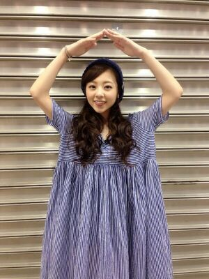

| 2014/08 08 Fri | 〜ゆうりと映画だよ〜ろってぃ− .♪ |
こんにちわ.！ ろってぃーです.

＼かなりん二十歳 お誕生日おめでとう／
まひろ、かなのこと 好き好き 大好き.
皆 コメントたくさんありがとうね〜(#^.^#)
嬉しゅうきもちっ♪

でも...前回のblog よく分からない内容でごめんなさい(´ `)
モバメでも送ったけど、
何をどう伝えたらいいのか分かんなくなっちゃって、
心配かけ過ぎるのも嫌だし、ろってぃー向上心なくなったのかな？って勘違いもされるの嫌だし、
今の自分の気持ちを上手く伝えきれないです..うん(´；ω；｀) 難しい難しい...。
あとあとあと、えりかセンターおめでとう！！！
初のセンターだね♪.♪.♪
えりかはしっかり者だし 引っ張ってくれそうです

一緒に頑張ろうね！
そして、ちーーちゃん ///選抜おめでとう！！！
ちーちゃん と かずみんの並びは本当に面白いと思う.♪あは
ちーちゃんは撮影の前に、お母さんのように皆のシャツとリボンを整えてくれます。
アンダーで熟成させたちーちゃんパワーをいっぱい使ってね
 ぁ
ぁ
あっ そーいや、昨日 お仕事終わりに ゆうりと二人で晩御飯と映画館に行ってきました！
ゆうりは『渇き。』まひろは『るろうに検心』を観ました。/
一緒に行って別の映画を観るってやつね..*
渇き 前見たから..*
「ここにいる理由」の振り付けの一部.笑

のし。
コメント(246)
2014/08/08 17:00